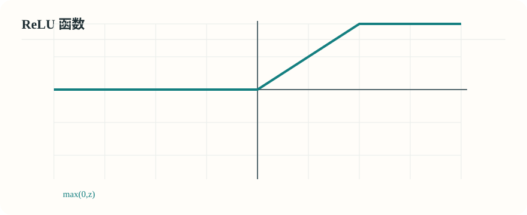
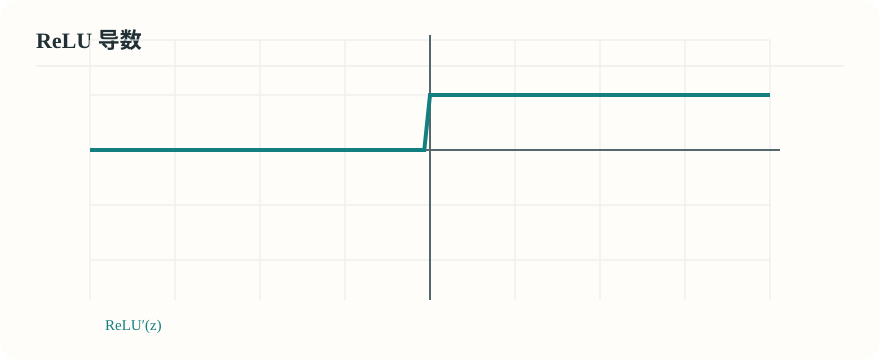
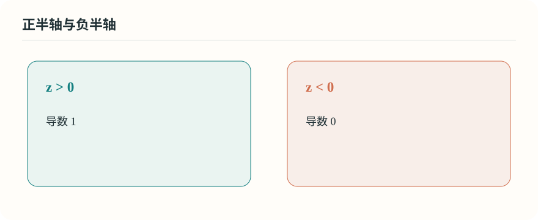
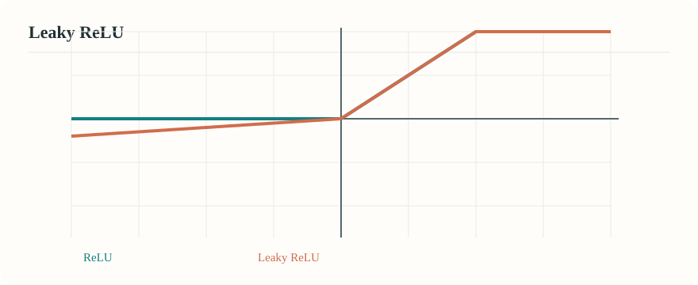
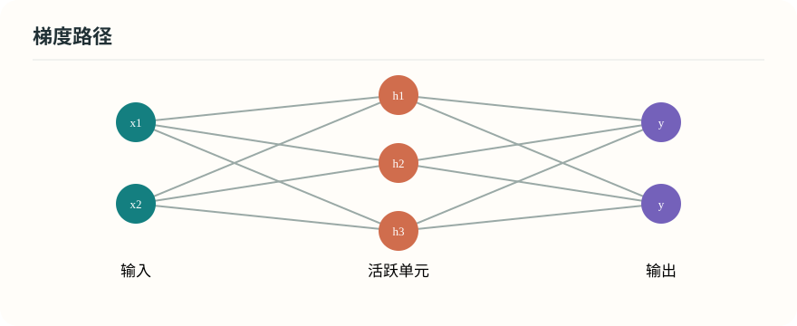
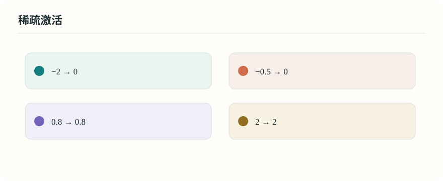
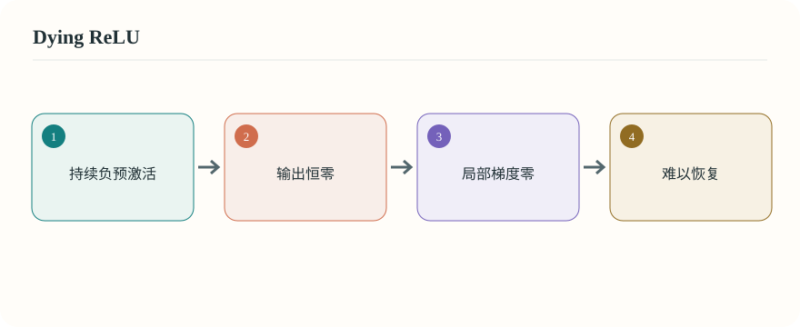
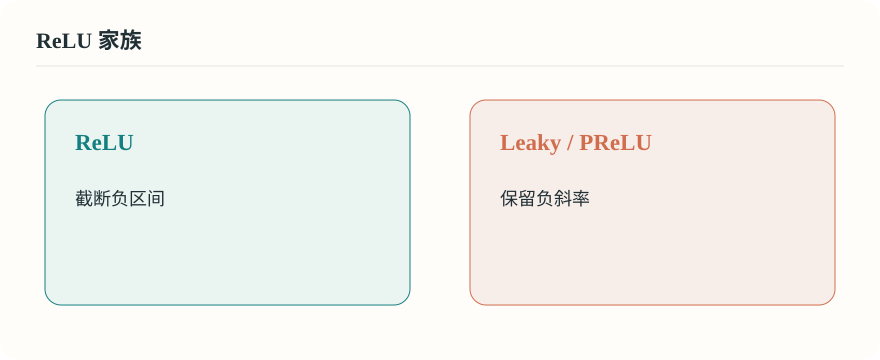

深度前馈网络 · MODULE 06
ReLU：简单分段线性函数为何有效
看清激活值、导数、稀疏性与 dying ReLU 的真实边界。
ReLU 在活跃区域保留单位斜率，同时把负半轴截断为零；它是强基线，但不是在所有区域都避免梯度消失。
ReLU 在活跃区域保留单位斜率，同时把负半轴截断为零；它是强基线，但不是在所有区域都避免梯度消失。
1. 定义只有一个 max
ReLU 把负输入映射为 0，正输入保持不变。它是分段线性函数，计算简单且易于并行。

2. 导数在活跃区域为 1
z>0 时导数为 1，z<0 时导数为 0；在 z=0 处不可微，框架采用约定的次梯度。准确说法是正半轴不饱和，而不是所有区域梯度都不消失。

3. 为什么常作默认选择
活跃单元的导数为 1；负输入产生零激活；计算只需比较与截断。这些性质让 ReLU 成为很多前馈网络的有效基线，但不保证在所有任务上最优。

4. Dying ReLU 的真实含义
若一个单元对相关训练样本持续产生负预激活，它的输出与局部梯度都为零，可能难以恢复。单个样本输入为负，并不等于神经元已经死亡。

5. Leaky ReLU 与 PReLU
Leaky ReLU 在负半轴保留固定小斜率；PReLU 把斜率作为可学习参数。它们让负区间也能传递梯度，但需要验证是否真的改善任务表现。

6. ELU 与 SELU
ELU 的负半轴使用指数形式并趋向负饱和值。SELU 加入固定缩放常数，在特定初始化、网络结构和正则化假设下讨论自归一化，不能无条件推广。

7. 初始化要配合激活
初始化控制第一轮预激活分布。He 初始化常用于 ReLU 类网络，考虑了正半轴截断对方差传播的影响；初始化不是独立于激活函数的装饰参数。

8. 实践选择
先从 ReLU 基线开始；若单元长期不激活，检查输入尺度、偏置、学习率和初始化，再比较 Leaky ReLU 等候选。比较时固定训练预算并重复随机种子。

交互实验
同时观察 ReLU 与 Leaky ReLU 的输出和局部导数。
交互用于核对公式与数值关系；不是完整训练基准。
可运行示例
import torch
import torch.nn.functional as F
z=torch.tensor([-2.,-.2,.5,2.])
print(F.relu(z))
print(F.leaky_relu(z,negative_slope=.1))参考资料
- Deep Learning, Goodfellow et al., Chapter 6.3.1
- Nair & Hinton, ICML 2010
- Klambauer et al., NeurIPS 2017
教材结论、论文结论与本页推导分别标注；图示为独立绘制。